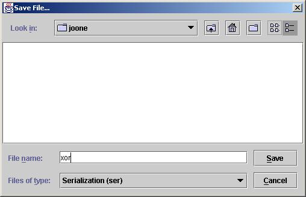

The Joone Editor allows networks to be saved and reloaded at a later date.
As you are developing a network, it is a good idea to save the project at regular intervals incase of power failure or accidental deletion of part of the project.
To save a network, click on File on the menu, followed by Save As...
This will display a Save File... dialogue box. Use the Look In drop down list to select the directory the network is to be save in, and name the file. Click Save.

The network is now saved.
To open a saved network, click on File, then Open and use the Open dialogue box in the same way.
The next tutorial, 'How to Teach a Network' shows how to educate a project.